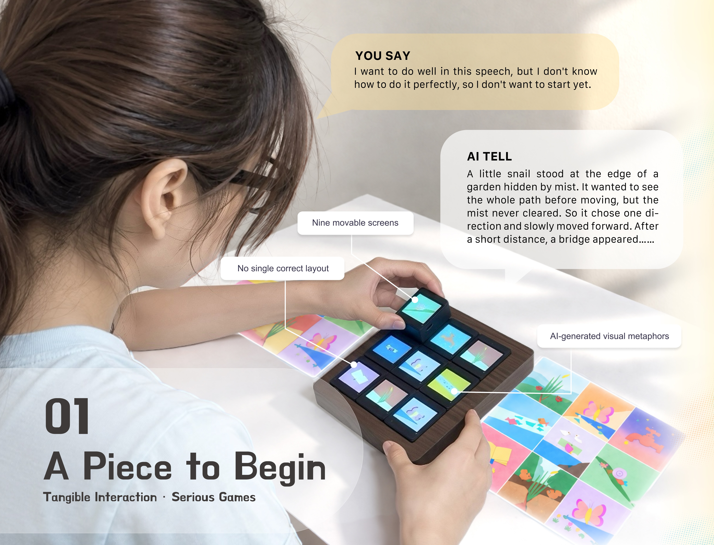
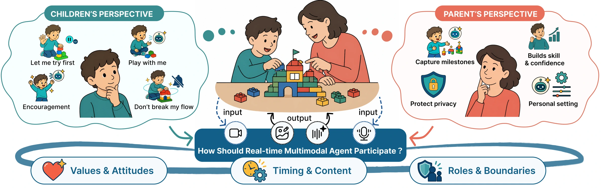
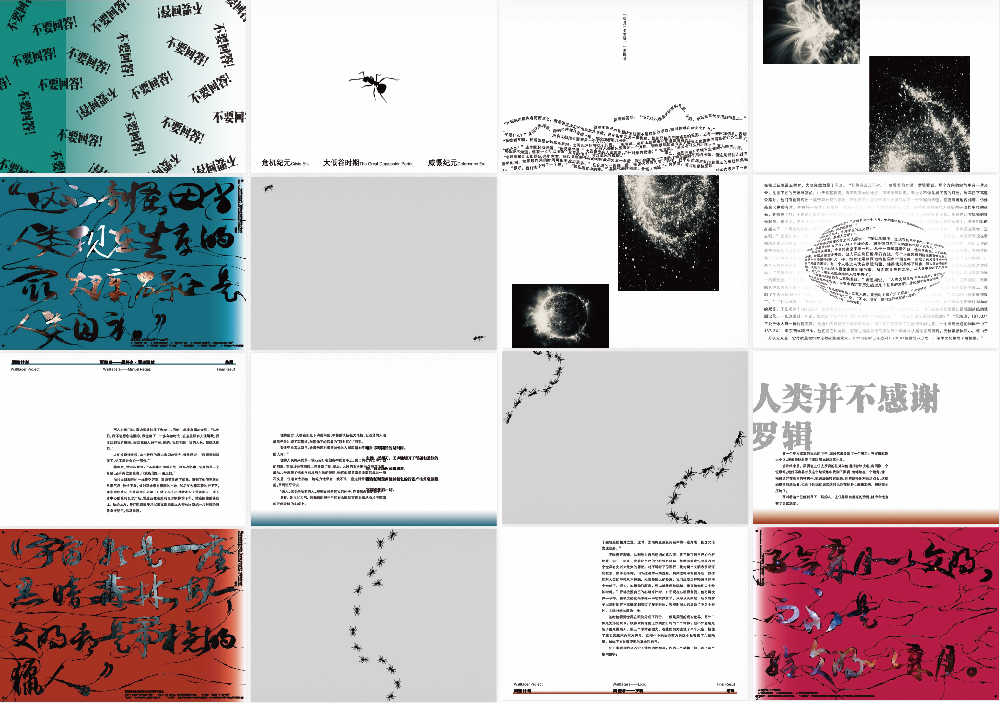

A Piece to Begin
A physical puzzle for people who wait for the best way to start. Each arrangement brings new clues and changes the story.

CHI 2027 submission · Second authorBrickBuddy
How should AI take part in children’s brick play? A study of what families want, when help is welcome, and who decides.

Hydrochromic Interactive Planter
A ceramic planter uses a changing surface pattern to show moisture.

Campus Second-hand Trading App
A campus marketplace with clearer listings, navigation, and trust information.

Autism Support Design
Making activities and visual tools help autistic youth share feelings with others.

The Three-Body Problem
A book design that turns science fiction scenes into visual and spatial experiences.